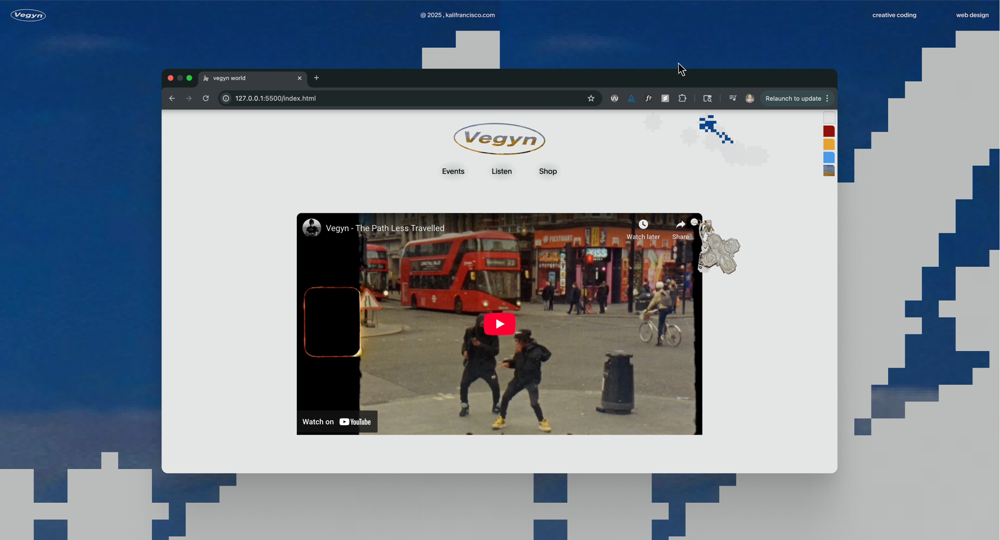
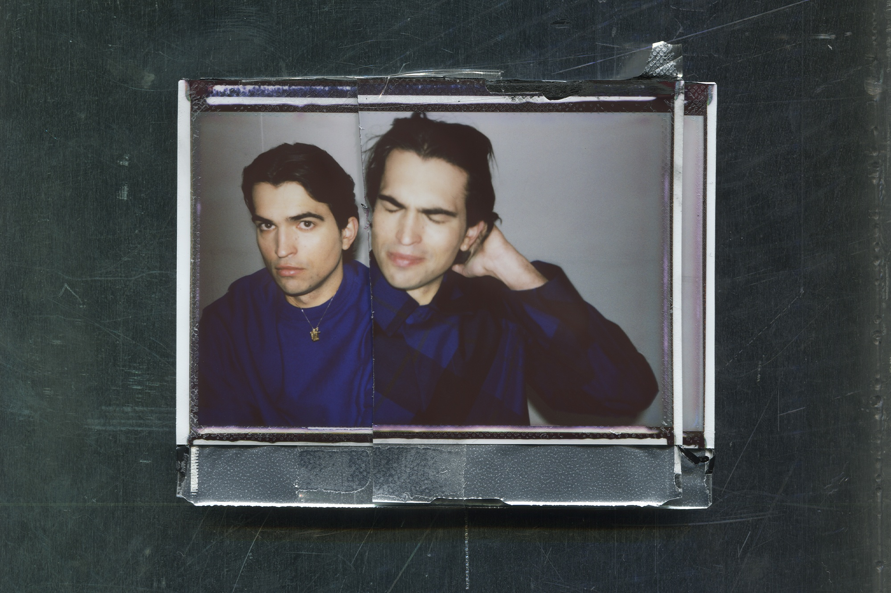
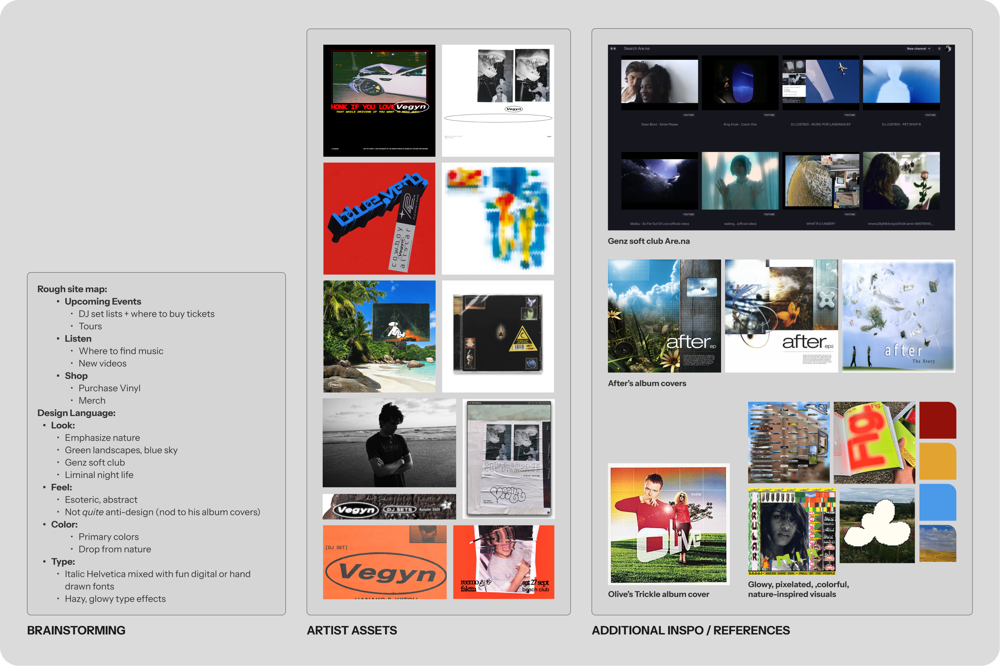

Vegyn website
Creative coding website for music producer, Vegyn
About
Vegyn is one of my favorite music producers. His visuals as an artist are uniquely reflective of the euphorically haunting dance music he creates.
While his label already has a website, I was inspired to make an all-in-one website to tie in info on Vegyn's upcoming events, merch, music, and more.

Visual Identity
Both Vegyn's sound and visuals reflect a distinct contrast between digital erosion and lush nature-scapes.
I started constructing the site's visual identity by grabbing Vegyn's current visual assets (album covers, show flyers, Instagram posts, etc) and my own inspirations I wanted the designs to reference.

Creative Coding
The guiding visual element I created was the cursor. I developed this pixelated cursor reveal effect to blend themes of Vegyn's electronic, natural, and digital world. I created a proof-of-concept in Figma, then refined the Javascript.
Final Design
From design to code, I present a playful balance of natural, gritty, and interactive digital elements to capture Vegyn's sonic ethos:
The site allows fans the option to color-swap the background:
The events page headline has a hand-drawn playfulness, while conveying the important information.
The hanging chrome cross indicates the current page:
Footer micro-interactions:
That's all, thanks for viewing!